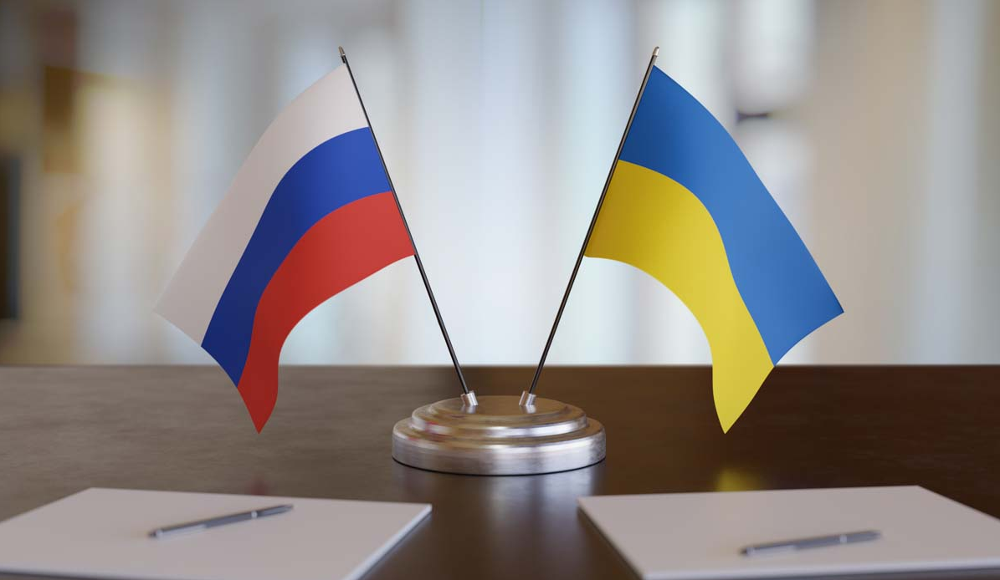
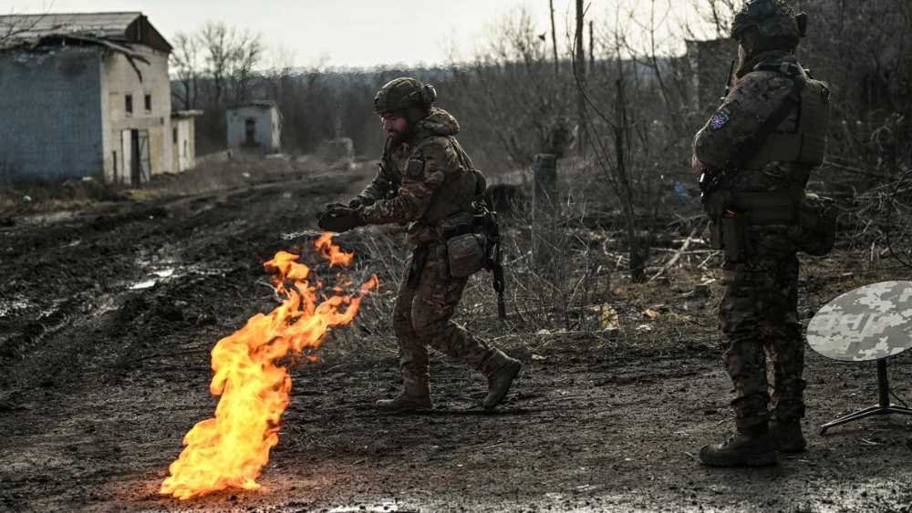
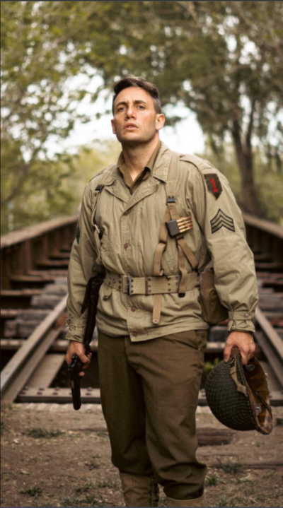
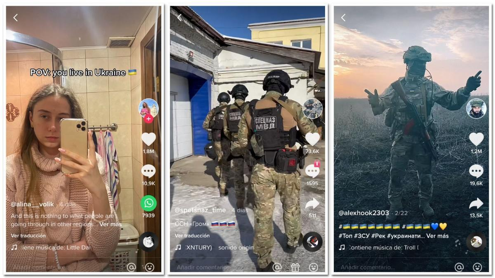

Rusia vs Ucrania: la máquina propagandística vista a través de las redes sociales
El conflicto entre Rusia y Ucrania nos ha demostrado nuevamente que la guerra no se gana solo en el campo de batalla, sino también en los medios de comunicación y las redes. La incorporación de las redes sociales en este tipo de conflictos es un fenómeno sin precedentes, pero fundamental para promover ideas con mayor rapidez y eficacia. El bando que descubra primero como sacar provecho de estas va a tener una ventaja inmensa sobre su contraparte

En Occidente, la guerra de Ucrania se percibe como agresiva, invasiva y acompañada de crímenes contra la humanidad. Y al principio algunos rusos compartían abiertamente sentimientos similares. Las protestas contra la guerra en Rusia fueron relativamente destacadas en los primeros meses. En los medios se han estado produciendo varios debates, basados en algunas certezas, especulaciones y opiniones que, en mayor medida, son desinformaciones, fruto de la propaganda y contrapropaganda de guerra. Una extensa variedad de fake news de diversos orígenes, en ocasiones derivadas de ciertos intereses políticos, buscan afirmar lo que se querría que ocurriera sobre lo que ha pasado, está pasando y pasará en la guerra ruso-ucraniana. Estos debates han surgido y siguen surgiendo como consecuencia de lo complicado que es tratar de entender la guerra en todos sus procesos.
 
Soldados ucranianos en batalla
Comienzo y reacciones iniciales
Con el soporte de expertos ucraniólogos y rusólogos de toda clase, tras la sorpresa inesperada de la invasión rusa, los debates apuntados se iniciaron con aquel que analizaba si tal acción era una guerra o no, ante la declaración rusa de que la invasión era solo una “operación militar especial”. Declaración que colocaba a dicha invasión, por no haber una declaración formal de guerra fuera de la concepción de una guerra convencional, aun cuando la misma fuera armada y violenta.
Concretamente, aquel debate sobre si el tipo de guerra es para unos convencional incluso acusando la acción sobre civiles, o híbrida para otros, si a la convencional se añaden procedimientos diferentes de los habituales, en apoyo a aquella confrontación bélica; o bien, para otros, se trata de una guerra total al estilo de la Segunda Guerra Mundial, en la que se actuó bélicamente con todo y contra todo.
Como consecuencia, la aseveración de que la invasión rusa ha conseguido unir Europa y reforzar la OTAN en su contra. Esto, a pesar de que dicha aseveración no era clara para algunos pues lo que parecía tener claridad se podría romper en orden de los intereses nacionales de cada país, según avanzara el conflicto y la dureza de las sanciones rusas, las cuales ya están deteriorando y desestabilizando la economía europea y mundial, levantando a su vez polémica por el conflicto ético que implica negar recursos a los civiles rusos.
Distribución en los medios
Una parte integral de los conflictos modernos es cómo se ramifican las potencias a través de los medios, en especial las redes sociales, que permiten llegar a todas partes del mundo en instantes, y albergan la mayor audiencia (la mayoría gente jóven, que es más fácil de persuadir).
No se hicieron esperar los esfuerzos, en especial por parte de las fuerzas ucranianas, para insertarse en plataformas como twitter, tiktok, instagram, etc, con el objeto de informar a la gente, solicitar apoyo, mostrar facetas inéditas del conflicto, entre otras cosas.

Videos publicados en TikTok, mostrando cómo es la vida en Ucrania en momentos de guerra, así como publicaciones de soldados rusos y ucranianos
Este tipo de videos operan con un sentido de familiaridad, en especial para las nuevas generaciones que crecieron rodeadas de esta tecnología. Usar nuestros teléfonos como forma de ocio diariamente por varias horas es lo común en el presente. Sumado a que este es un conflicto de escala global, es prácticamente imposible no toparnos al menos un video/imagen/publicación
Tweets realizados por la cuenta oficial de Ucrania, poco después de comenzada la invasión
Es necesario también mencionar a Volodymyr Zelensky, presidente de Ucrania. Antes del conflicto, no era una figura que resonara más allá de sus límites nacionales y círculos europeos. Una vez comenzada la disputa, explotó completamente su alcance, en especial en las redes. Esto fue sumamente beneficial para la percepción pública ucraniana: Zelensky logró posicionarse como una figura heróica (se negó a evacuar el país, cosa que se aseguró de comunicar públicamente) en muy poco tiempo. Esta nueva reputación, sumada con un seguimiento de docenas de millones entre todas sus redes le ganó a Ucrania un gran apoyo en lugares en los que antes no eran tenidos en cuenta
Zelensky junto a Joe Biden, presidente de los Estados Unidos
Publicaciones en TikTok sobre Zelensky
Efectos
La propaganda en redes sociales es el uso estratégico de plataformas de medios sociales para difundir información sesgada o engañosa con el propósito de influir y causar efectos varios. Algunos de los más comunes son:
Manipulación de la opinión pública: La propaganda puede influir en la forma en que las personas ven eventos y temas, moldeando sus opiniones y actitudes. Puede exacerbar divisiones existentes o crear nuevas divisiones en la sociedad.
Desinformación y desconfianza: La propagación de información falsa o engañosa socava la confianza en las fuentes de noticias y en la información en línea en general. Puede ser difícil para las personas discernir la verdad de la falsedad.
Polarización: La propaganda a menudo se dirige a grupos específicos de la sociedad con mensajes diseñados para polarizar y radicalizar a las personas, fomentando la confrontación y la discordia.
Amplificación en línea: Las redes sociales pueden amplificar rápidamente la propagación de mensajes propagandísticos debido a la velocidad a la que la información se comparte y se vuelve viral.
Manipulación de tendencias: Los actores propagandistas pueden intentar manipular las tendencias en las redes sociales para dar la apariencia de que un tema o hashtag es más popular o relevante de lo que realmente es.
En Ucrania contra Rusia pudimos observar básicamente todos estos efectos a medida que se desarrollaban en tiempo real. El efecto que todavía se mantiene más de un año después de iniciado el conflicto es un apoyo exponencial hacia Ucrania. A pesar de los esfuerzos por parte de entidades rusas (que no fueron pocos, fomentando la desinormación) la respuesta general por parte de las masas fue significativamente en favor de los ucraninanos. Esto resultó de gran ayuda a lo largo de la disputa, brindando apoyo y reconocimiento de lugares en los que solo podían alcanzar con las redes